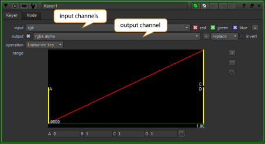
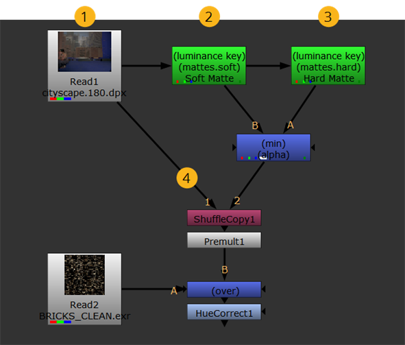

默认情况下，大多数节点 核武器 尝试处理 rgba 集中的当前通道，并将输出放在这些相同的通道中。然而，许多节点也包含一个输入下拉菜单，它允许您选择要处理的通道，以及 输出 下拉菜单选择应该存储结果的通道。

一些节点也包含 面具 控件和 a 面具 输入连接器，它允许您选择用于遮罩的通道，以限制颜色校正等操作。使用这些机制，您可以将脚本中几乎任何节点的输出指向任何可用通道。
下面的脚本试图澄清这些概念。注意脚本生成六个通道 (尽管它也可以生成 1023)。下面的步骤描述了如何创建每个通道。
|
 |
| 一个六频道的剧本。 |
| 1。 | 脚本在前台读取，创建三个通道 ( 红色 , 绿色 ,和 蓝色 )，默认情况下分配给 Rgba 设置。频道数: 3 |
| 2. | 低对比度键 ( 软 ) 被拉出并指定给一个名为 遮罩 。频道数: 4 |
| 3. | 高对比度键 ( 硬 ) 被拉动并指定给遮罩层。频道数: 5 |
| 4. | 的 遮罩.硬 和 遮罩.软 通道混合形成最终的哑光 ( 阿尔法 )，分配给 Rgba 层。频道数: 6 |
假设现在您想使用软磨砂节点的输出作为校正的遮罩来执行颜色校正。没有必要通过管道从软磨砂节点输出 -- 它已经存在于数据流中，以及创建的其他五个通道。
您只需附加一个颜色校正节点，如 HueCorrect，然后从 面具 控件，例如 遮罩.软 .
注意: 的 遮罩 名称的一部分表示父层。
|
|